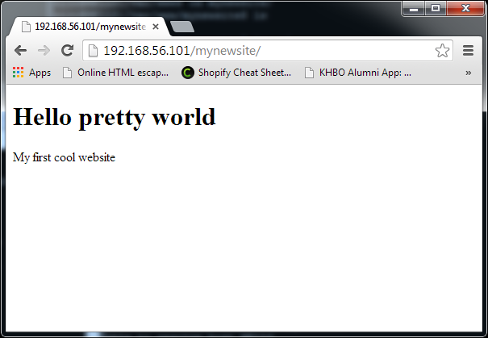

Webtechnology and Webprogramming
Setting up a LAMP stack
The Virtual Machine
@Kulab
- Select at least 256MB of RAM
- Create two network adapters
- A NAT adapter (accessing the Internet)
- A host only adapter (local access)
- Install Ubuntu 12.04 - 64bit - Server Edition
Basic Server Setup
Configuring the network interfaces
- You can chech the current active and configured network interfaces using the
ifconfig command - The network interfaces are configured based on the content of the
"/etc/network/interfaces"file
sudo nano /etc/network/interfaces
Configuring the network interfaces @ Kulab
- Your network interfaces should be configured for DHCP
# The loopback network interface
auto lo
iface lo inet loopback
# The primary network interface (NAT)
auto eth0
iface eth0 inet dhcp
# The secondary network interface (Host-only)
auto eth1
iface eth1 inet dhcp
Configuring a network interface with a static IP address
# The primary network interface
auto eth0
iface eth0 inet static
address 10.0.0.1
netmask 255.255.255.0
network 10.0.0.0
broadcast 10.0.0.255
gateway 10.0.0.254
- Lines beginning with the word "auto" are used to identify the physical interfaces to be brought up when ifup is run with the -a option (this option is used by the system boot scripts)
- You can bring interfaces down with
ifdown <int>and back up usingifup <int>where <int> iseth0, eth1, ...
Configuring the hostname
- Setting a hostname allows for easy identification when logged in.
- Note that the system's hostname has no relationship to websites or email services hosted on it, aside from providing a name for the system itself
- Your hostname should not be "www" or anything too generic.
echo "webtech" > /etc/hostname
hostname -F /etc/hostname
- When logging out and back in your shell should reflect the changed hostname
Configuring the hostname
- Update the host file to reflect new hostname
nano /etc/hosts
- Add the following lines to the files
127.0.0.1 webtech
127.0.0.1 webtech.be
127.0.0.1 webtech.org
Update list of software packages
- Update list of software packages (updates the list of available packages and their versions)
apt-get update
Upgrade currently installed packages
- Upgrade currently installed packages with the newest versions available
apt-get upgrade
- Or you can also use dist-upgrade to carry out a more intelligent upgrade
- Basically upgrade will only upgrade existing packages from one version to another. It will not install or remove packages, even if doing so is required to upgrade others.
apt-get dist-upgrade
Configuring the server timezone
- Configuring the server timezone
dpkg-reconfigure tzdata
Enable open SSH server
- Enable open SSH server
tasksel
- Select OpenSSH server
- SSH can be configured by altering
/etc/ssh/sshd_config- You should for example not permit root login from ssh
- Dont forget to restart the SSH service after making changes
sudo service ssh restart
Connecting via SSH
- You should now be able to connect to your machine using SSH
- You can use a utility like putty to connect to the VM
- Connect to the host-only network (192.168.x.x)
- Use port 22
User accounts
Adding a system admin user
useradd -r -m -s /bin/bash nico
- -r to create system account (no expire)
- -m to create home dir
- -s specify bash as shell
Password
- Set the password for the accounts (without a password a user account will be in locked status)
passwd nico
Sudoer
- Add user to sudo users
usermod -a -G sudo nico
Locking root
- Make sure to login as system user (nico)
- Now we lock the root account so it cant be used for logging in
sudo usermod -L root
- From now on you should always login using one of the admin accounts
- The root account can be reenabled (if ever needed) by setting a password using
passwd root
Configuring SSH to use key-pair authentication
- Generate user keys (Windows or host machine) if you dont already have one or want to create a seperate one for this machine
cd ~/.ssh
ssh-keygen -t rsa
Configuring SSH to use key-pair authentication
- Copy the public key to the server
scp id_rsa.pub nico@<ip-address>:/tmp/id_rsa.pub
- Watch out with windows tab completion !
- "id_rsa.pub" may be changed to "./id_rsa.pub" which is literally used as the filename.
Configuring SSH to use key-pair authentication
- Create a .ssh dir for the user (here nico as example) if none exists yet
mkdir /home/nico/.ssh
chmod 0700 /home/nico/.ssh
Configuring SSH to use key-pair authentication
- Add the key to the authorized keys on the server
sudo cat /tmp/id_rsa.pub >> /home/nico/.ssh/authorized_keys
sudo rm /tmp/id_rsa.pub
sudo chown -R nico:nico /home/nico/.ssh
sudo chmod -R 0700 /home/nico/.ssh
Installing and configuring Apache
Installing apache
- Install apache and php using apt-get
sudo apt-get install apache2 php5 libapache2-mod-php5
- You should now have a directory
/var/www - Surf to your domain name or ip address and check if the site is online
Need to knows
- You can restart apache using the following command if ever needed
sudo service apache2 restart
- The PHP config file can be found as
/etc/php5/apache2/php.ini - Main apache config, sites-available and sites-enabled can be found in
/etc/apache2/
Configure Apache Rewrite
- Make sure that apacha is allowing .htaccess files to override permissions by changing the line
'AllowOverride None'to'AllowOverride All'
sudo nano /etc/apache2/sites-available/default
<Directory /var/www/>
Options Indexes FollowSymLinks MultiViews
AllowOverride All
Order allow,deny
allow from all
</Directory>
- Restart the apache service
sudo service apache2 restart
Adding system accounts to the www-data group
- This allows the users to cd into the
/var/wwwdirs - Add
nicoto thewww-datagroup
sudo usermod -a -G www-data nico
- Display the groups a user is assigned to using
id nico
- Display all available groups using
cat /etc/group
Setting up MySql
- Install MySQL server
sudo apt-get install mysql-server mysql-client php5-mysql
- Enter a root password when requested
Setting up PhpMyAdmin
- Install PhpMyAdmin using apt-get
sudo apt-get install phpmyadmin
- Select apache2 when asked
- The first password that needs to be provided is the root password of the database.
- The second password is the password that is attached to the phpmyadmin user account.
- Select to configure database. If you miss you can restart config using
sudo dpkg-reconfigure phpmyadmin - You should now be able to access phpmyadmin via
http://<server-ip-address/phpmyadmin
Installing and configuring GIT

Installing GIT
- Install git using apt-get
sudo apt-get install git-core git
Adding a GIT user
- Add a GIT user and set a password
sudo useradd -r -m -s /bin/bash git
sudo passwd git
Creating repositories
- Create a new git repository in the home dir of the git user
sudo su git
cd ~
mkdir -p repositories/myfirstgitrepo.git
cd repositories/myfirstgitrepo.git
git --bare init
- You should get the message
"Initialized empty Git repository in ..."
Cloning your new repository
- Clone the new repository on your client machine
git clone git@<ip-address>:repositories/myfirstgitrepo.git
Website deployment using GIT
Creating a deployment directory
- Start by creating a new directory in
/var/www
cd /var/www
sudo mkdir mynewsite
sudo chown git:www-data mynewsite
sudo chmod 750 mynewsite
Creating a deployment hook
- Start by logging in with the user git
sudo su git
cd ~/repositories/myfirstgitrepo.git
- Copy the sample
post-update.samplehook - Make sure to name the new file post-update
cd hooks
cp post-update.sample post-update
Creating a deployment hook
- Edit the post-update hook using nano
- Do a checkout action of the git repository to your deployment directory
#!/bin/sh
echo "... Deploying your web application ..."
# Hook specific code
umask 0027 && GIT_WORK_TREE=/var/www/mynewsite git checkout -f
echo "... Done deploying ..."
Linux umask
- When a user creates a file or directory under Linux, it is created with a default set of permissions
- The user file-creation mode mask (umask) is used to determine the file permission for newly created files
- Default files are created with the access mode 666 and directories with 777
- The default umask 002 used for normal user
- The default umask for the root user is 022
Linux umask
| Normal User | Root | |
|---|---|---|
| File |
666
-002
664 = rw-rw-r--
|
666
-022
644 = rw-r--r--
|
| Directory |
777
-002
775 = rwxrwxr-x
|
777
-022
755 = rwxr-xr-x
|
Looking back at our hook
umask 0027 && GIT_WORK_TREE=/var/www/mynewsite git checkout -f
- This is executed in context of the GIT user
- So for files: 666 - 027 = 640 = rw-r-----
- And for dirs: 777 - 027 = 750 = rwxr-x---
- So the
gituser has all rights and thegitgroup has only read rights. Nobody else can view the files or traverse the dirs.
Let's test it
- Add and commit an
index.htmlfile in the git repository - Push the repository
git add index.html
git commit -m "Added index file"
git push origin master
Let's test it

- Ow but wait, what about the
www-datauser ? How can the webserver access these files ?
Allow apache to access the deployed site
- We could add the
www-datauser to thegitgroup but this is a security risk - We could do a
chowninside the hook code but git does not have the rights and this would break existing sites and permissions - Solution: set the s-bit on the initial drop directory for the group
- This makes sure that the group is set to
www-dataof all new files and dirs
- This makes sure that the group is set to
Allow apache to access the deployed site
- Remove all the content inside the drop directory
cd /var/www/mynewsite/
rm index.html
- Set the s-bit of the drop dir
cd ..
sudo chmod g+s mynewsite
ls -al
Let's test it
- Add and commit a change to the
index.htmlfile - Push the repository
git add index.html
git commit -m "Added index file"
git push origin master

Check the permissions
- Check the permissions of the files on the server
cd /var/www/mynewsite
ls -al
Firewall rules
Install Uncomplicated Firewall
- Install ufw using apt-get
sudo apt-get install ufw
Allow SSH and HTTP
- Configure ufw to allow ssh and http access
sudo ufw allow ssh
sudo ufw allow http
Activate UFW
- Enable the firewall
sudo ufw enable
Mail Server
Setting up postfix for sending of emails
- Install postfix using apt-get
sudo apt-get install postfix
- Pick the "Internet site" configuration
- Configure the system mail name as "webtech.be" (without the quotes)
Further configuration of the postfix
- Open the postfix configuration file
sudo nano /etc/postfix/main.cf
myhostname = xionix
alias_maps = hash:/etc/aliases
alias_database = hash:/etc/aliases
myorigin = /etc/mailname
# No local delivery
mydestination =
# Send all mail to xionix.be relay host (live domain in our case)
relayhost = xionix.be
mynetworks = 127.0.0.0/8 [::ffff:127.0.0.0]/104 [::1]/128
mailbox_size_limit = 0
recipient_delimiter = +
inet_interfaces = all
Test your setup
- Make sure you can telnet to the localhost on port 25
telnet localhost 25
Test your setup
- Install a CLI mail client
sudo apt-get install mailutils
Test your setup
- You can send mail using the following command
echo "MESSAGE" | mail -s "SUBJECT" <email_address>
Attachments
- If you want to send attachments you need uuencode (part of sharutils)
sudo apt-get install sharutilst
- Sending mail with attachments (you need to specify the filename twice!)
uuencode <attachedfile> <attachedfile> | mail -s "My Attachment" -- nico@webtech.be